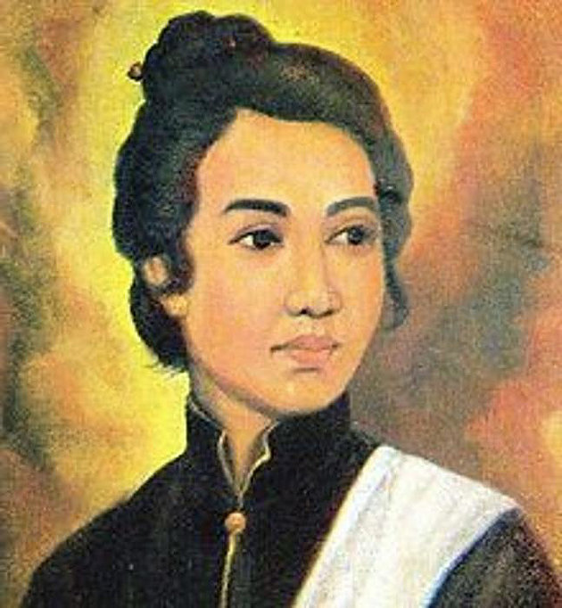

Pahlawan
-
Ir. Soekarno
Dr. Ir. H. Soekarno adalah Presiden pertama Republik Indonesia yang menjabat pada periode 1945–1967. Ia memainkan peranan penting dalam memerdekakan bangsa Indonesia dari penjajahan Belanda. Ia adalah Proklamator Kemerdekaan Indonesia yang terjadi pada tanggal 17 Agustus 1945. Soekarno adalah yang pertama kali mencetuskan konsep mengenai Pancasila sebagai dasar negara Indonesia dan ia sendiri yang menamainya.
-

Mohammad Hatta
Dr. Drs. H. Mohammad Hatta adalah negarawan dan ekonom Indonesia yang menjabat sebagai Wakil Presiden Indonesia pertama. Ia bersama Soekarno memainkan peranan sentral dalam perjuangan kemerdekaan Indonesia dari penjajahan Belanda sekaligus memproklamirkannya pada 17 Agustus 1945.
-

Cut Nyak Dien
Cut Nyak Dhien adalah seorang Pahlawan Nasional Indonesia dari Aceh yang berjuang melawan Belanda pada masa Perang Aceh. Setelah wilayah VI Mukim diserang, ia mengungsi, sementara suaminya Ibrahim Lamnga bertempur melawan Belanda.
-

Diponegoro
Bendara Pangeran Harya Dipanegara adalah salah seorang pahlawan nasional Republik Indonesia. Pangeran Diponegoro terkenal karena memimpin Perang Diponegoro/Perang Jawa melawan pemerintah Hindia Belanda. Perang tersebut tercatat sebagai perang dengan korban paling besar dalam sejarah Indonesia.